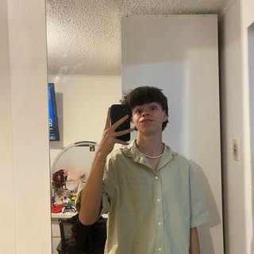

Streamer y videos cortos
Dinterr
Encuentra mis streams en Kick y mis clips en YouTube y TikTok.
Kick
Streams en vivo
->
YouTube
Videos cortos
->
TikTok
Clips y contenido corto
->
Instagram
Cuenta personal
->